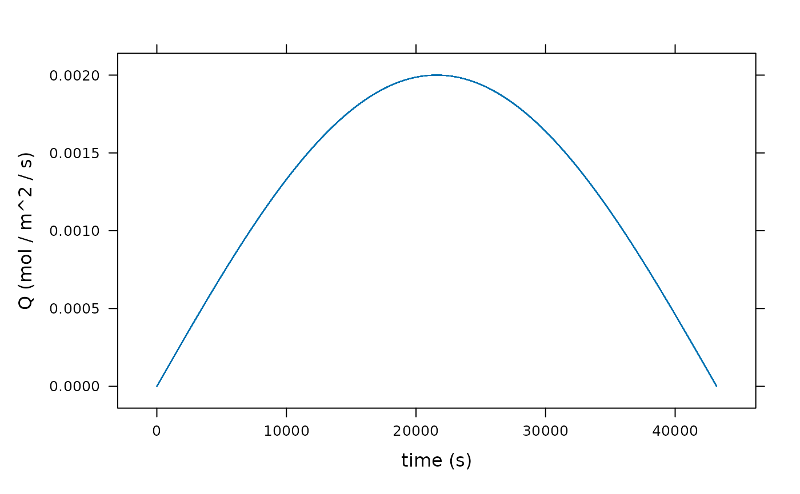
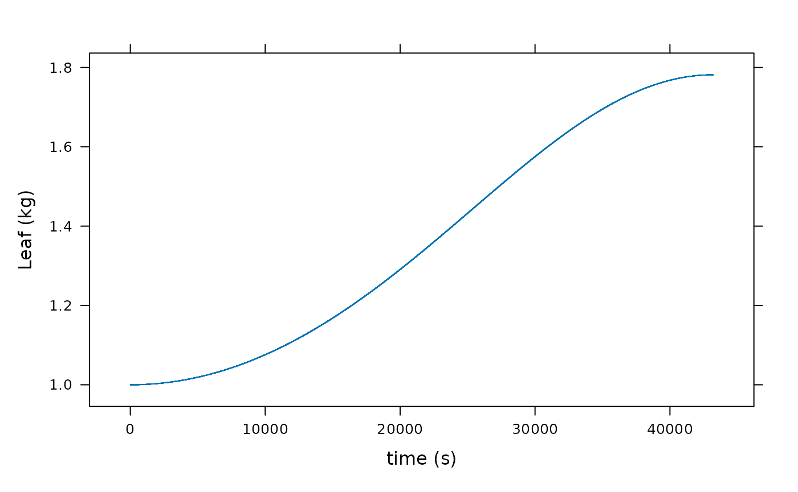
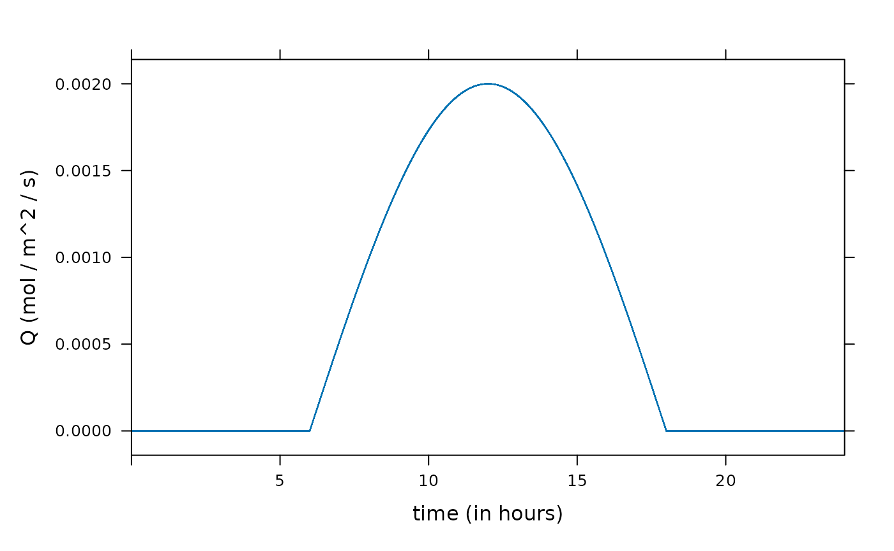
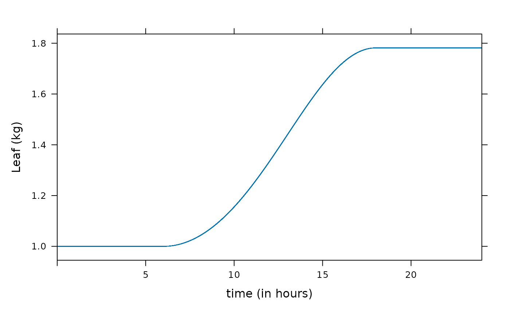
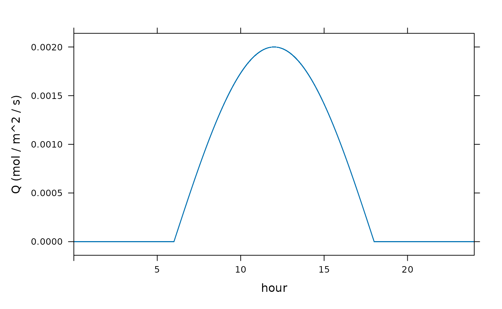
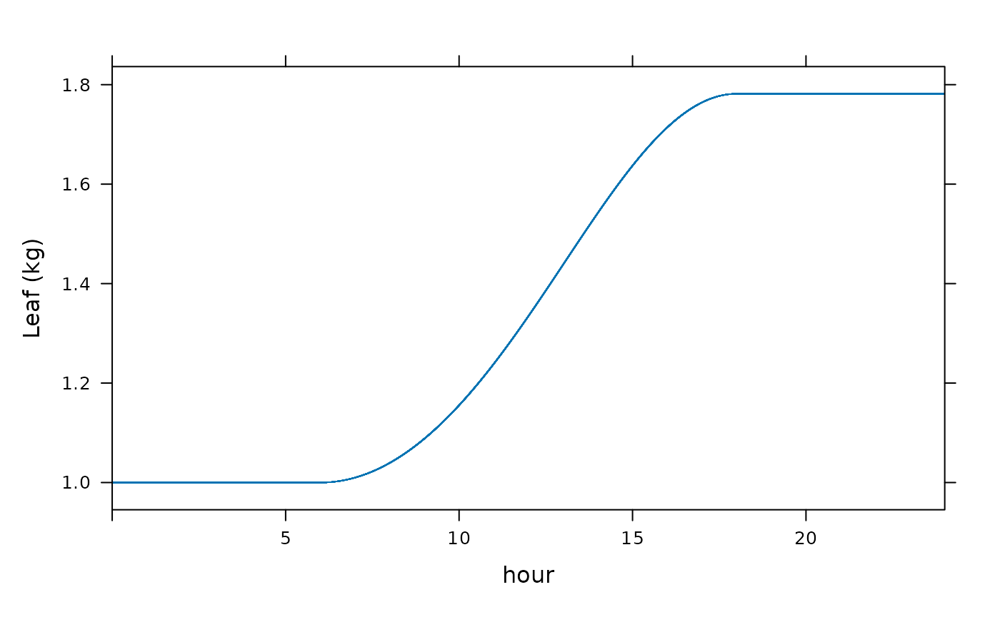
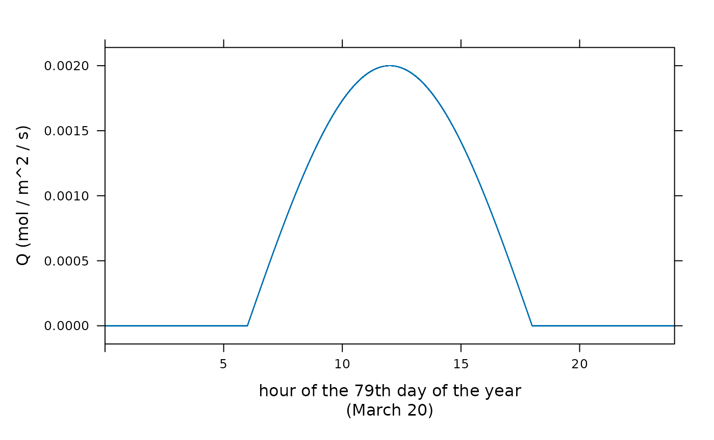
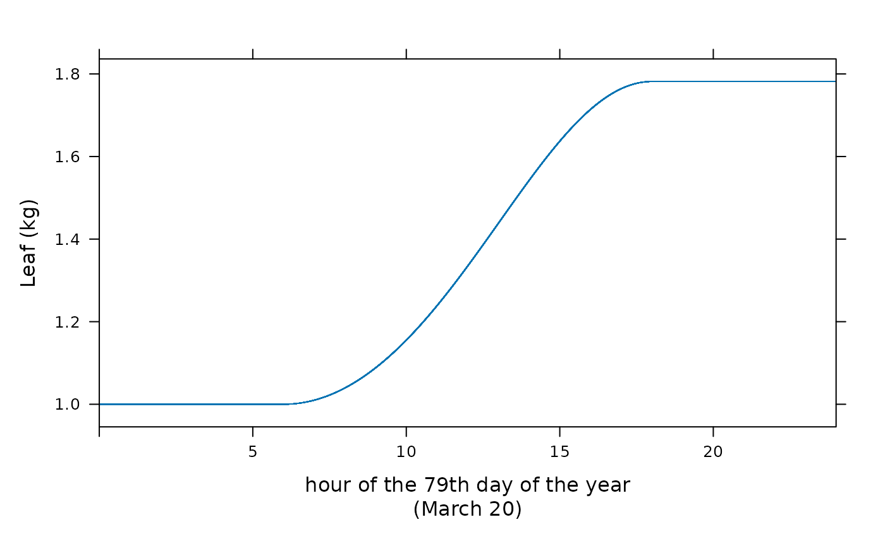

BioCro II Paper: Section 1.1 Example
Source:vignettes/BioCro-II_Paper--Section-1.1-example.Rmd
BioCro-II_Paper--Section-1.1-example.RmdIntroduction
This is a demonstration of the example discussed in Section 1.1 and Appendix 1 of the BioCro II paper (Lochocki et al. 2022). A few corrections to and clarifications of the exposition given in that paper are given in the comments below.
The Code
library(BioCro)
library(lattice)
library(knitr) # for kable(), which yields nicer-looking tables
## customized version of kable with defined options:
columns_to_print <- c('time', 'Q', 'mass_gain', 'Root', 'Leaf')
show_row_number <- FALSE
format <- list(scientific = FALSE, digits = 7)
cable <- function(x, ...) {
kable(x[, columns_to_print],
row.names = show_row_number,
format.args = format,
...)
}
## Set plotting character globally
trellis.par.set("plot.symbol", list(pch = '.'))
################################################################################
parameters <- list(
alpha_rue = 0.07, # kg / mol
SLA = 25, # m^2 / kg
C_conv = 0.03, # kg / mol
f_leaf = 0.2, # kg / kg
f_root = 0.8, # kg / kg
timestep = 1 # s
)
initial_values <- list(
Leaf = 1, # kg
Root = 1 # kg
)
Q <- function(time) sin(time/3600/12 * pi) * 2000e-6 # mol / m^2 / s
times <- 0:(3600 * 12) # seconds
light_intensity <- data.frame(
time = times,
Q = Q(times)
)
result <- run_biocro(
initial_values,
parameters,
light_intensity,
'BioCro:example_model_mass_gain',
'BioCro:example_model_partitioning'
)
xyplot(Q ~ time, data = result, xlab = "time (s)", ylab = "Q (mol / m^2 / s)")
xyplot(Leaf ~ time, data = result, xlab = "time (s)", ylab = "Leaf (kg)")
A few comments
The formula for the driver
A somewhat plausible mechanistic model of the photosynthetic photon
flux density Q due to the sun would give it as being roughly
proportional to the sine of the angle the sun makes with the horizon.
Assuming 12 hours of daylight, with the sun passing directly overhead (a
condition that approximately holds at the equator during an equinox),
this angle (measured in radians) is approximately
time/3600/12 * pi, where time is the number of
seconds that have elapsed since sunrise. (Here, an angle greater than
pi/2 is taken to be the angle of the position of the sun
measured from its position at sunrise; this value thus takes a maximum
value of pi at sunset.) Assuming a maxumum flux density of
2000e-6 mol / m^2 /s (attained at solar noon when the sine
is 1) then yields the function given for Q.
Note that instead of supplying Q as a driver, we could
have instead written a direct module that computed Q from the time of
day. The latter would then be, for this example, the only driver.
The timestep parameter
Note that the timestep value given in the parameters is in seconds. But also note that almost all differential modules in the BioCro library assume that timestep values are given in hours!
If a timestep value is given in seconds rather than in hours, three important things must be kept in mind:
All differential modules used in the simulation must assume that the timestep value is given in seconds. Another way of saying this is that the outputs of the differential modules used should represent the rate of change of the output quantities per second.
In almost all cases, the output columns “doy”, “hour”, and possibly “time” won’t make sense and (if not filtered out) should be ignored.
In almost all cases, no module having
timeas input should be used. (See below for further discussion.)
The same precepts apply, mutatis mutandi, to any other timestep units one may wish to use.
As always, the difference in time between any row n in the drivers dataframe and the row n + 1 that immediately follows it should be equal to “timestep” (in whatever units timestep has been given).
First modification: 24 hour simulation
Although in the paper it is stated that “Light intensity is given as a table of values at every second in a 24-h period,”, the period here is actually only 12 hours (time ranges from 0 to 3600 × 12 seconds = 12 hours). As noted above, for the purposes of this example, it may be assumed that time ranges from sunrise to sunset of a 12-hour day so that “time” represents the number of seconds that have elapsed since sunrise.
Alternatively, we could have assumed time to range over a 24-hour period starting and ending at solar midnight, with Q being zero before sunrise and after sunset. This entails a slight modification to the defining equations:
times <- 0:(3600 * 24) # seconds
Q <- function(time) pmax(0, sin((time/3600 - 6)/12 * pi) * 2000e-6) # mol / m^2 / s(The “− 6” here adjusts the phase of the sine function so that the positive values correspond to the daylight hours, assumed to begin at 6 a.m. solar time.)
Here is how the 24-hour version of the example would look. A few rows of the result table are printed at significant portions of the day: at the beginning, just after midnight, when it is dark and there is no mass accumulation; at dawn, when the rate of mass accumulation first becomes non-zero; at noon, when the flux Q is highest; at dusk, when the rate of mass accumulation again drops to zero; and at the end of the simulation, when the final leaf and root mass are known.
As noted above, the values in the result for doy and
hour are nonsensical in the context of this example and so
we have filtered them out (along with ncalls, which is not
of particular interest). And the values in the time column
should be interpreted as the number of elapsed seconds from solar
midnight (not the number of (fractional) days that have elapsed since
midnight at the start of December 31, which is the correct
interpretation in a “normal” BioCro simulation).
times <- 0:(3600 * 24) # seconds
Q <- function(time) {
pmax(0, sin((time/3600 - 6)/12 * pi) * 2000e-6) # mol / m^2 / s
}
light_intensity <- data.frame(
time = times,
Q = Q(times)
)
result <- run_biocro(
initial_values,
parameters,
light_intensity,
'BioCro:example_model_mass_gain',
'BioCro:example_model_partitioning'
)
## cable = customized version of kable (see above)
## kable = (nicely-formatted) knitr table
cable(result[1:4,]) # beginning| time | Q | mass_gain | Root | Leaf |
|---|---|---|---|---|
| 0 | 0 | 0 | 1 | 1 |
| 1 | 0 | 0 | 1 | 1 |
| 2 | 0 | 0 | 1 | 1 |
| 3 | 0 | 0 | 1 | 1 |
cable(result[seq(21591, 21661, 10),]) # around dawn| time | Q | mass_gain | Root | Leaf |
|---|---|---|---|---|
| 21590 | 0.0000000 | 0.0000000 | 1.000000 | 1.000000 |
| 21600 | 0.0000000 | 0.0000000 | 1.000000 | 1.000000 |
| 21610 | 0.0000015 | 0.0000001 | 1.000000 | 1.000000 |
| 21620 | 0.0000029 | 0.0000002 | 1.000001 | 1.000000 |
| 21630 | 0.0000044 | 0.0000002 | 1.000003 | 1.000001 |
| 21640 | 0.0000058 | 0.0000003 | 1.000005 | 1.000001 |
| 21650 | 0.0000073 | 0.0000004 | 1.000007 | 1.000002 |
| 21660 | 0.0000087 | 0.0000005 | 1.000011 | 1.000003 |
cable(result[43199:43203,]) # around mid day| time | Q | mass_gain | Root | Leaf |
|---|---|---|---|---|
| 43198 | 0.002 | 0.0001401 | 2.338850 | 1.334712 |
| 43199 | 0.002 | 0.0001401 | 2.338962 | 1.334740 |
| 43200 | 0.002 | 0.0001402 | 2.339074 | 1.334769 |
| 43201 | 0.002 | 0.0001402 | 2.339186 | 1.334796 |
| 43202 | 0.002 | 0.0001402 | 2.339298 | 1.334825 |
cable(result[seq(64741, 64811, 10),]) # around dusk| time | Q | mass_gain | Root | Leaf |
|---|---|---|---|---|
| 64740 | 0.0000087 | 0.0000008 | 4.126557 | 1.781639 |
| 64750 | 0.0000073 | 0.0000007 | 4.126563 | 1.781641 |
| 64760 | 0.0000058 | 0.0000005 | 4.126568 | 1.781642 |
| 64770 | 0.0000044 | 0.0000004 | 4.126572 | 1.781643 |
| 64780 | 0.0000029 | 0.0000003 | 4.126575 | 1.781644 |
| 64790 | 0.0000015 | 0.0000001 | 4.126576 | 1.781644 |
| 64800 | 0.0000000 | 0.0000000 | 4.126577 | 1.781644 |
| 64810 | 0.0000000 | 0.0000000 | 4.126577 | 1.781644 |
cable(result[86398:86401,]) # end| time | Q | mass_gain | Root | Leaf |
|---|---|---|---|---|
| 86397 | 0 | 0 | 4.126577 | 1.781644 |
| 86398 | 0 | 0 | 4.126577 | 1.781644 |
| 86399 | 0 | 0 | 4.126577 | 1.781644 |
| 86400 | 0 | 0 | 4.126577 | 1.781644 |
In the following graphs, we have changed the labeling on the x axis so that time is shown in hours rather than seconds.
xyplot(Q ~ time / 3600, data = result, xlim = c(0, 24), xlab = "time (in hours)", ylab = "Q (mol / m^2 / s)")
xyplot(Leaf ~ time / 3600, data = result, xlim = c(0, 24), xlab = "time (in hours)", ylab = "Leaf (kg)")
Second modification: Changing the time specification from seconds to days
The usual assumption in BioCro is that the time quantity
represents the time, in days, from the beginning of the year, not the
number of seconds that have elapsed from the start of the simulation.
(More precisely, the integral part of the time value should
be the day of the year, counting from one, and the fractional part
should be the portion of the day that has elapsed since midnight at the
begining of that day. Thus time = 4.25 would occur at 6
a.m. on January 4.)
It follows, then, that the way we have been using the
time variable in the previous examples in inconsistent with
the usual interpretation of time in two respects: First, the units were
in seconds rather than days. Second, the time represented the amount of
time elapsed from the beginning of the simulation rather than an
“absolute” time, that is, a time value specifying a specific time of day
on a specific day of the year. (There is no great harm in using the
time variable in this unconventional way of the previous
examples, as long as we know what we are doing and as long as we aren’t
using any modules that assume the conventional interpretation
of the time variable. In fact, in simulations such as these
ones, the result table is arguably more readable when we have our time
value in seconds or hours rather than in days.)
The first of these inconsistencies is easily remedied by rescaling
the time values so that instead of running from 0 to 86400 (seconds),
they run from from 0 to 1 (days): we simply divide each former time
value by 86400. Now, the value of time increases by 1/86400
(of a day!) from row to row (an amount still corresponding to one
second):
light_intensity <- data.frame(
time = times/86400,
Q = Q(times)
)
result <- run_biocro(
initial_values,
parameters,
light_intensity,
'BioCro:example_model_mass_gain',
'BioCro:example_model_partitioning'
)
cable(result[1:4,]) # beginning| time | Q | mass_gain | Root | Leaf |
|---|---|---|---|---|
| 0.0000000 | 0 | 0 | 1 | 1 |
| 0.0000116 | 0 | 0 | 1 | 1 |
| 0.0000231 | 0 | 0 | 1 | 1 |
| 0.0000347 | 0 | 0 | 1 | 1 |
cable(result[seq(21591, 21661, 10),]) # around dawn| time | Q | mass_gain | Root | Leaf |
|---|---|---|---|---|
| 0.2498843 | 0.0000000 | 0.0000000 | 1.000000 | 1.000000 |
| 0.2500000 | 0.0000000 | 0.0000000 | 1.000000 | 1.000000 |
| 0.2501157 | 0.0000015 | 0.0000001 | 1.000000 | 1.000000 |
| 0.2502315 | 0.0000029 | 0.0000002 | 1.000001 | 1.000000 |
| 0.2503472 | 0.0000044 | 0.0000002 | 1.000003 | 1.000001 |
| 0.2504630 | 0.0000058 | 0.0000003 | 1.000005 | 1.000001 |
| 0.2505787 | 0.0000073 | 0.0000004 | 1.000007 | 1.000002 |
| 0.2506944 | 0.0000087 | 0.0000005 | 1.000011 | 1.000003 |
cable(result[43199:43203,]) # around mid day| time | Q | mass_gain | Root | Leaf |
|---|---|---|---|---|
| 0.4999769 | 0.002 | 0.0001401 | 2.338850 | 1.334712 |
| 0.4999884 | 0.002 | 0.0001401 | 2.338962 | 1.334740 |
| 0.5000000 | 0.002 | 0.0001402 | 2.339074 | 1.334769 |
| 0.5000116 | 0.002 | 0.0001402 | 2.339186 | 1.334796 |
| 0.5000231 | 0.002 | 0.0001402 | 2.339298 | 1.334825 |
cable(result[seq(64741, 64811, 10),]) # around dusk| time | Q | mass_gain | Root | Leaf |
|---|---|---|---|---|
| 0.7493056 | 0.0000087 | 0.0000008 | 4.126557 | 1.781639 |
| 0.7494213 | 0.0000073 | 0.0000007 | 4.126563 | 1.781641 |
| 0.7495370 | 0.0000058 | 0.0000005 | 4.126568 | 1.781642 |
| 0.7496528 | 0.0000044 | 0.0000004 | 4.126572 | 1.781643 |
| 0.7497685 | 0.0000029 | 0.0000003 | 4.126575 | 1.781644 |
| 0.7498843 | 0.0000015 | 0.0000001 | 4.126576 | 1.781644 |
| 0.7500000 | 0.0000000 | 0.0000000 | 4.126577 | 1.781644 |
| 0.7501157 | 0.0000000 | 0.0000000 | 4.126577 | 1.781644 |
cable(result[86398:86401,]) # end| time | Q | mass_gain | Root | Leaf |
|---|---|---|---|---|
| 0.9999653 | 0 | 0 | 4.126577 | 1.781644 |
| 0.9999769 | 0 | 0 | 4.126577 | 1.781644 |
| 0.9999884 | 0 | 0 | 4.126577 | 1.781644 |
| 1.0000000 | 0 | 0 | 4.126577 | 1.781644 |
xyplot(Q ~ 24 * time, data = result, xlim = c(0, 24), xlab = "hour", ylab = "Q (mol / m^2 / s)")
xyplot(Leaf ~ 24 * time, data = result, xlim = c(0, 24), xlab = "hour", ylab = "Leaf (kg)")
Third modification: Making the time variable consistent
with a reasonable time of year
The simulation just shown takes care of making the time step
consistent with the time duration represented by the time column in its
usual interpretation. But the time value of 0 corresponds
(in the conventional BioCro interpretation) to midnight at the start of
December 31, and this is not consistent with a sun passing directly
overhead during the course of a 12 hour day, even at an equatorial
location. We may remedy this by shifting the time values forward by 79
days to the time of the March equinox. Now time represents not just a
duration in days, but more precisely, it represents the number of
(fractional) days that have elapsed since midnight at the start of
December 31 of the previous year. Direct modules that rely on this
meaning for time, such as solar_position_michalsky, could
now be used if we wished. (But we still can not mix in derivative
modules, such as the thermal time modules, that use time as
input, since these, unlike the example_model_partitioning
module we are using, assume the timestep value to be in hours, not
seconds.)
light_intensity <- data.frame(
time = times/86400 + 79,
Q = Q(times)
)
result <- run_biocro(
initial_values,
parameters,
light_intensity,
'BioCro:example_model_mass_gain',
'BioCro:example_model_partitioning'
)
cable(result[1:4,]) # beginning| time | Q | mass_gain | Root | Leaf |
|---|---|---|---|---|
| 79.00000 | 0 | 0 | 1 | 1 |
| 79.00001 | 0 | 0 | 1 | 1 |
| 79.00002 | 0 | 0 | 1 | 1 |
| 79.00003 | 0 | 0 | 1 | 1 |
cable(result[seq(21591, 21661, 10),]) # around dawn| time | Q | mass_gain | Root | Leaf |
|---|---|---|---|---|
| 79.24988 | 0.0000000 | 0.0000000 | 1.000000 | 1.000000 |
| 79.25000 | 0.0000000 | 0.0000000 | 1.000000 | 1.000000 |
| 79.25012 | 0.0000015 | 0.0000001 | 1.000000 | 1.000000 |
| 79.25023 | 0.0000029 | 0.0000002 | 1.000001 | 1.000000 |
| 79.25035 | 0.0000044 | 0.0000002 | 1.000003 | 1.000001 |
| 79.25046 | 0.0000058 | 0.0000003 | 1.000005 | 1.000001 |
| 79.25058 | 0.0000073 | 0.0000004 | 1.000007 | 1.000002 |
| 79.25069 | 0.0000087 | 0.0000005 | 1.000011 | 1.000003 |
cable(result[43199:43203,]) # around mid day| time | Q | mass_gain | Root | Leaf |
|---|---|---|---|---|
| 79.49998 | 0.002 | 0.0001401 | 2.338850 | 1.334712 |
| 79.49999 | 0.002 | 0.0001401 | 2.338962 | 1.334740 |
| 79.50000 | 0.002 | 0.0001402 | 2.339074 | 1.334769 |
| 79.50001 | 0.002 | 0.0001402 | 2.339186 | 1.334796 |
| 79.50002 | 0.002 | 0.0001402 | 2.339298 | 1.334825 |
cable(result[seq(64741, 64811, 10),]) # around dusk| time | Q | mass_gain | Root | Leaf |
|---|---|---|---|---|
| 79.74931 | 0.0000087 | 0.0000008 | 4.126557 | 1.781639 |
| 79.74942 | 0.0000073 | 0.0000007 | 4.126563 | 1.781641 |
| 79.74954 | 0.0000058 | 0.0000005 | 4.126568 | 1.781642 |
| 79.74965 | 0.0000044 | 0.0000004 | 4.126572 | 1.781643 |
| 79.74977 | 0.0000029 | 0.0000003 | 4.126575 | 1.781644 |
| 79.74988 | 0.0000015 | 0.0000001 | 4.126576 | 1.781644 |
| 79.75000 | 0.0000000 | 0.0000000 | 4.126577 | 1.781644 |
| 79.75012 | 0.0000000 | 0.0000000 | 4.126577 | 1.781644 |
cable(result[86398:86401,]) # end| time | Q | mass_gain | Root | Leaf |
|---|---|---|---|---|
| 79.99997 | 0 | 0 | 4.126577 | 1.781644 |
| 79.99998 | 0 | 0 | 4.126577 | 1.781644 |
| 79.99999 | 0 | 0 | 4.126577 | 1.781644 |
| 80.00000 | 0 | 0 | 4.126577 | 1.781644 |
xyplot(Q ~ 24 * (time - 79), data = result, xlim = c(0, 24), xlab = "hour of the 79th day of the year\n(March 20)", ylab = "Q (mol / m^2 / s)")
xyplot(Leaf ~ 24 * (time - 79), data = result, xlim = c(0, 24), xlab = "hour of the 79th day of the year\n(March 20)", ylab = "Leaf (kg)")